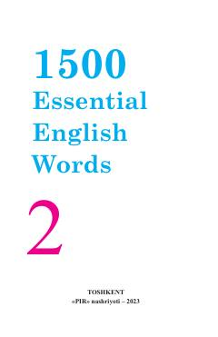

1EIngliz tilidagi eng zarur so'zlarni o'zlashtirish uchun mo'ljallangan amaliy lug'at.
Ushbu kitob ingliz tilini o'rganuvchilar uchun eng ko'p ishlatiladigan so'zlarni o'zlashtirishga mo'ljallangan to'rt qismli to'plamning ikkinchi qismidir. Unda kundalik hayotda va amaliyotda tez-tez uchraydigan so'zlar jamlangan bo'lib, o'quvchilarning o'qish, yozish va tinglab tushunish ko'nikmalarini rivojlantirishga xizmat qiladi.